Comecei a jogar CTF e olha no que deu!
SEMCOMP UFBA - 2017
Adeilson Silva / @adeilsonsilva
Quem é você mesmo?
Adeilson Silva
Graduando em Ciência da Computação - UFBA
Pesquisador no iVision UFBA
Conselheiro Administrativo da InfoJr UFBA
E por que você vai falar de CTF?
Porque eu ganhei!
Blz brother, mas o que é CTF?
https://ctf-br.org/sobre
“ CTF significa Capture the Flag. No âmbito da informática, são competições que envolvem diversas competências dos profissionais/estudantes/entusiastas para a resolução de desafios relacionados à infosec (segurança da informação), com o objetivo de capturar a bandeira (normalmente um código) e pontuar. ”
Tipos de CTF - Ataque-Defesa
Times recebem máquinas com vulnerabilidades e pontuam ao explorar as máquinas dos amiguinhos.
Tipos de CTF - Jeopardy
Rev (Engenharia Reversa)
XPL (Exploração de Binários)
Forensics (Forense)
Misc (diversos)
Web (Web :O)
Net (Redes)
Pwn (OWNAÇÃO FTW)
Programming (Programação)
Formato da flag
NOME_DO_EVENTO{V0c3_eh_o_M1Z3R3_d4s_FL4G$}
Então se eu jogar isso aí eu sou o novo H4CK3R_1337 ????
CALMA!
Conhecendo a cena
CTF no Brasil
Desafio de Segurança - EnSi 2017
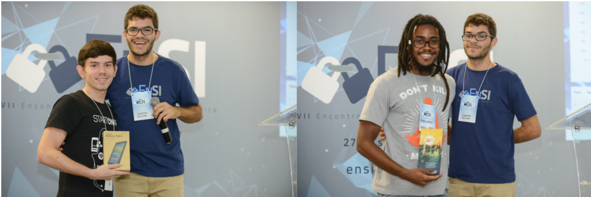Desafio de Segurança - EnSi 2017
Hackaflag Grupos

Hackaflag Individual
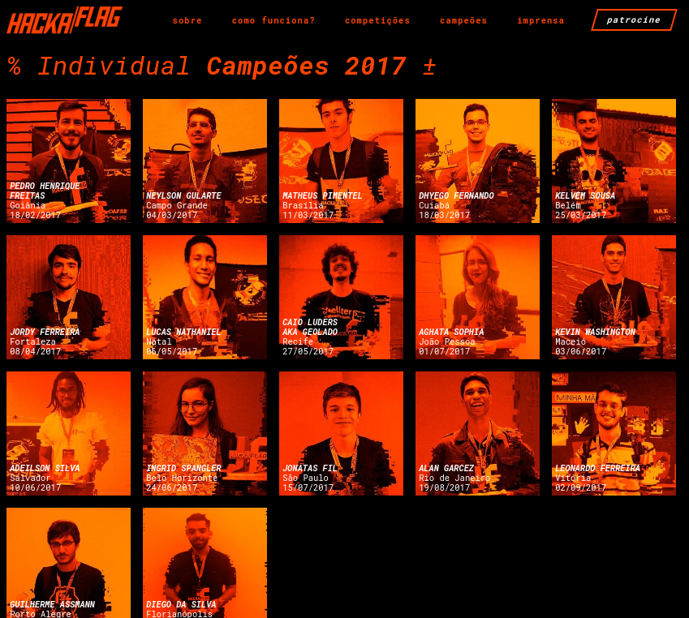Hackaflag
5º Hacking n' Roll
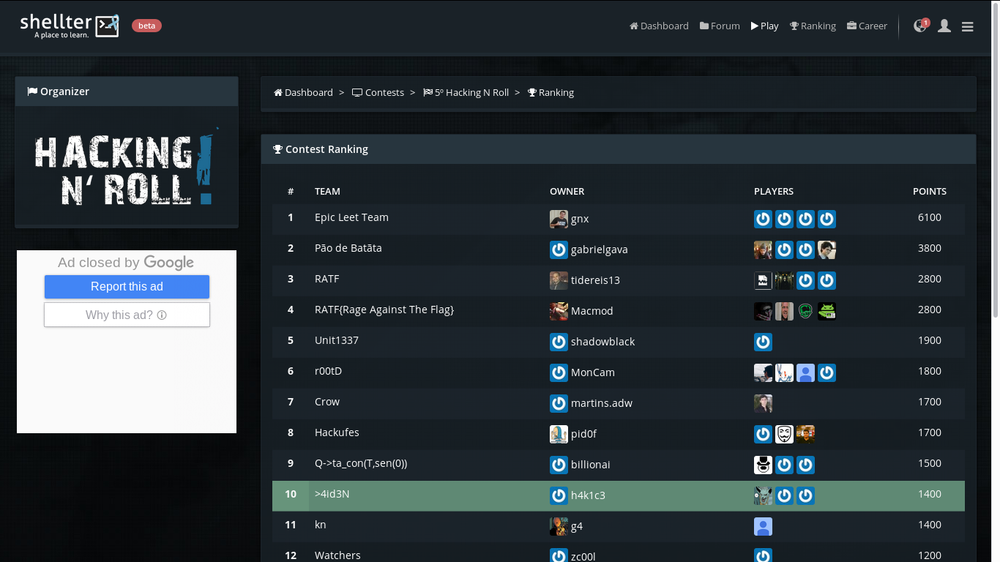Hacking N' Roll
Pwn2Win
Pwn2Win
CTF no Exterior
Google CTF 2017
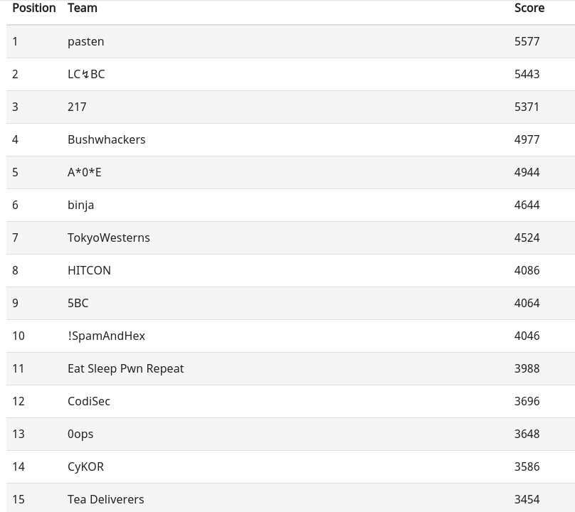Google CTF
Writeups do Google CTF 2017 (Quals)
Treta: times BR não podem ser premiados :(
HITCON 2017 (Qualificação)
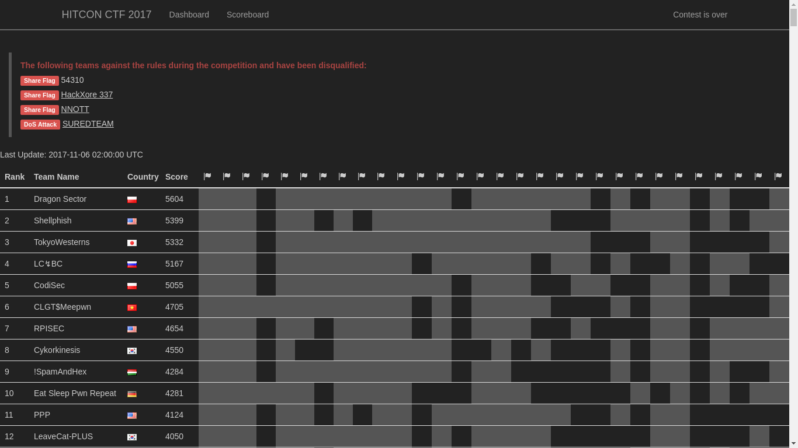HITCON
DEFCON 2017
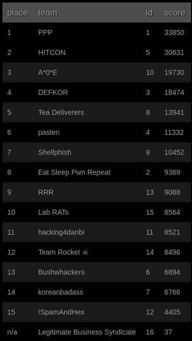DEFCON
Então me mostre uns challenges aí, vá...
Crypto
Challenge de "crypto" do EnSi 2017.
Analisando o arquivo...
$ file base.chall
base.chall: ASCII text, with very long lines
$ wc base.chall
1 1 559161 base.chall
$ cat base.chall
(...) a05GTXlSbGhXYmtaU1lUTm9SVmR1YjNkUFZVNXVVRlF3U3dvPQo=
Base64!
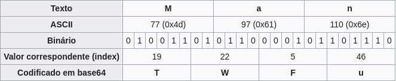Agora ficou fácil...
#SQN
$ base64 -d base.chall
(...) A2VlZkNFMyRlhWbkZSYTNoRVdub3dPVU5uUFQwSwo=
Persistência é a chave!
$ $ base64 -d base.chall | base64 -d | base64 -d | base64 -d | base64 -d | base64 -d | base64 -d | base64 -d | base64 -d | base64 -d | base64 -d | base64 -d | base64 -d | base64 -d | base64 -d | base64 -d | base64 -d | base64 -d | base64 -d | base64 -d | base64 -d | base64 -d | base64 -d | base64 -d | base64 -d | base64 -d | base64 -d | base64 -d | base64 -d | base64 -d | base64 -d | base64 -d | base64 -d
ensi{all_y0ur_b4se_ar3_belong_to_uz}
MISC
Challenge "misc" do Hackaflag, edição do Rio de Janeiro 2017.
Cifra de César!

Decifrando...
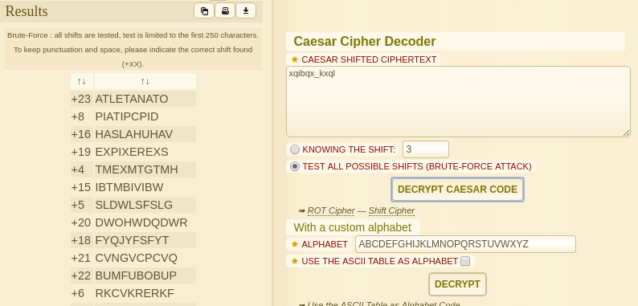Analisando...
$ file cesar.txt
cesar.txt: ASCII text
$ wc cesar.txt
285964 285964 22019224 cesar.txt
$ cat cesar.txt
(...) WldWVnBEVlRCb1ExSXhUWGRTYTBwU1ZsVlZPVU5uUFQwSwo=
Analisando...
$ base64 -d cesar.txt | base64 -d | base64 -d | base64 -d | base64 -d
(...) K5S(0kRvޣlc50[o(ƾ 6dkX'J5I+̓ZH길GWY|.LgXp{ӧbpQY>
$ base64 -d cesar.txt | base64 -d | base64 -d | base64 -d | base64 -d | file -
/dev/stdin: Zip archive data, at least v2.0 to extract
$ base64 -d cesar.txt | base64 -d | base64 -d | base64 -d | base64 -d > file.zip
$ unzip file.zip
Decifrando...
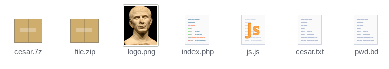Assinatura dos arquivos!
$ xxd logo.png
00000000: 8950 4e47 0d0a 1a0a 0000 000d 4948 4452 .PNG........IHDR
00000010: 0000 06f4 0000 0832 0806 0000 01c7 c342 .......2.......B
00000020: e500 0000 0467 414d 4100 00b1 8f0b fc61 .....gAMA......a
00000030: 0500 0000 0662 4b47 4400 ff00 ff00 ffa0 .....bKGD.......
00000040: bda7 9300 0000 0970 4859 7300 000b 1300 .......pHYs.....
00000050: 000b 1301 009a 9c18 0000 0007 7449 4d45 ............tIME
00000060: 07e1 0808 0d02 38f6 e448 e600 0020 0049 ......8..H... .I
[...]
003dae00: 000c 6cf4 3300 0000 4401 0000 0e00 2400 ..l.3...D.....$.
003dae10: 0000 0000 0000 2000 0000 0000 0000 7265 ...... .......re
003dae20: 662d 7265 6d5f 7478 2e63 6162 0a00 2000 f-rem_tx.cab.. .
003dae30: 0000 0000 0100 1800 b510 2fcb 4b10 d301 ........../.K...
003dae40: 0738 611c b30f d301 b0a4 9805 4b10 d301 .8a.........K...
003dae50: 504b 0102 1f00 0a00 0900 0000 6156 084b PK..........aV.K
003dae60: 0000 0000 0c00 0000 0000 0000 0800 2400 ..............$.
003dae70: 0000 0000 0000 2000 0000 6f00 0000 6e75 ...... ...o...nu
003dae80: 6c6c 2e74 7874 0a00 2000 0000 0000 0100 ll.txt.. .......
003dae90: 1800 0137 dd5f 4d10 d301 0137 dd5f 4d10 ...7._M....7._M.
003daea0: d301 0137 dd5f 4d10 d301 504b 0506 0000 ...7._M...PK....
003daeb0: 0000 0200 0200 ba00 0000 b100 0000 0000 ................
Assinatura dos arquivos!
$ binwalk -e logo.png
DECIMAL HEXADECIMAL DESCRIPTION
--------------------------------------------------------------------------------
0 0x0 PNG image, 1780 x 2098, 8-bit/color RGBA, interlaced
115 0x73 Zlib compressed data, best compression
4041686 0x3DABD6 Zip archive data, encrypted at least v2.0 to extract, compressed size: 41, uncompressed size: 27, name: flag.tx
4041780 0x3DAC34 Zip archive data, encrypted at least v1.0 to extract, compressed size: 12, name: null.txt
4042025 0x3DAD29 End of Zip archive
4042047 0x3DAD3F Zip archive data, encrypted at least v2.0 to extract, compressed size: 51, uncompressed size: 324, name: ref-rem_tx.cab
4042158 0x3DADAE Zip archive data, encrypted at least v1.0 to extract, compressed size: 12, name: null.txt
4042410 0x3DAEAA End of Zip archive
Assinatura dos arquivos!
root@root ~/_logo.png.extracted $ ls
3DABD6.zip 3DAD3F.zip flag.tx null.txt ref-rem_tx.cab
$ unzip 3DAD3F.zip
$ file ref-rem_tx.cab
ref-rem_tx.cab: ASCII text, with CRLF line terminators
$ cat ref-rem_tx.cab
HACKAFLAG{c354r_c0Ro4-atl3ta}
Web
Reverse
Challenge de "Reverse" do Hackaflag 2017.
Analisando...
$ chmod +x flag
$ objdump -D flag
flag: file format elf64-x86-64
[...]
000000000000087e [main]
87e: 55 push %rbp
87f: 48 89 e5 mov %rsp,%rbp
882: 48 81 ec 40 01 00 00 sub $0x140,%rsp
889: 48 8d 3d 04 01 00 00 lea 0x104(%rip),%rdi
890: e8 eb fd ff ff callq 680 [puts@plt]
[...]
8e2: 74 18 je 8fc [main+0x7e]
8e4: 48 8b 45 f8 mov -0x8(%rbp),%rax
8e8: 48 89 c7 mov %rax,%rdi
8eb: e8 20 ff ff ff callq 810 [decrypt]
Um pouco sobre registradores...
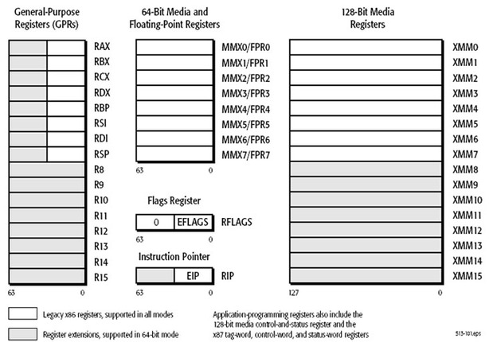R.I.P. in peace!
$ gdb ./flag
(gdb) layout asm
(gdb) b * 0x5555555548e2
Breakpoint 1 at 0x5555555548e2
(gdb) set $rip=0x5555555548e4
(gdb) c
Continuing.
HACKAFLAG{FACILPRACARALHO}
Forensics
Challenge de "Forense" do Hacking n' Roll 2017.
Analisando...
$ file 81c624e9.sqlite
81c624e9.sqlite: SQLite 3.x database, user version 30, last written using SQLite version 3009001
$ sqlite3 81c624e9.sqlite
sqlite> .tables
moz_anno_attributes moz_favicons moz_items_annos
moz_annos moz_historyvisits moz_keywords
moz_bookmarks moz_hosts moz_places
moz_bookmarks_roots moz_inputhistory
sqlite> PRAGMA table_info(moz_places);
0|id|INTEGER|0||1
1|url|LONGVARCHAR|0||0
2|title|LONGVARCHAR|0||0
3|rev_host|LONGVARCHAR|0||0
4|visit_count|INTEGER|0|0|0
5|hidden|INTEGER|1|0|0
6|typed|INTEGER|1|0|0
7|favicon_id|INTEGER|0||0
8|frecency|INTEGER|1|-1|0
9|last_visit_date|INTEGER|0||0
10|guid|TEXT|0||0
11|foreign_count|INTEGER|1|0|0
Analisando...
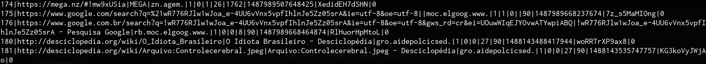Analisando...
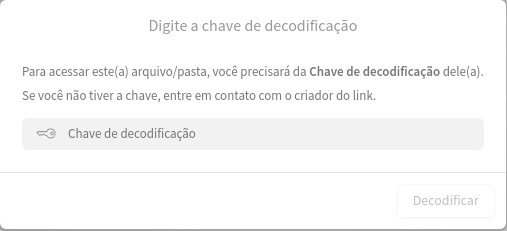Planilha "secreta"
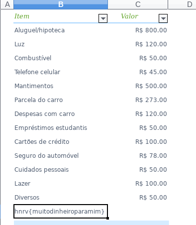E se eu quiser jogar isso aí, kbça?
Dá p/ ser bom sozinho...
Shellter Labs
CTF-BR
CTFTime
Hack the Box!
CTF 365
Mas em time é mais divertido :P

Formação original do K.R.A.L.
K.R.A.L CTF-Team
Obrigado!
Links interessantes!
Can CTF Players Replace Professional Penetration Testers?
Is Competitive Programming Useful to Get a Job In Tech?
Capture the Flag: It's a game for hack...I mean security professionals